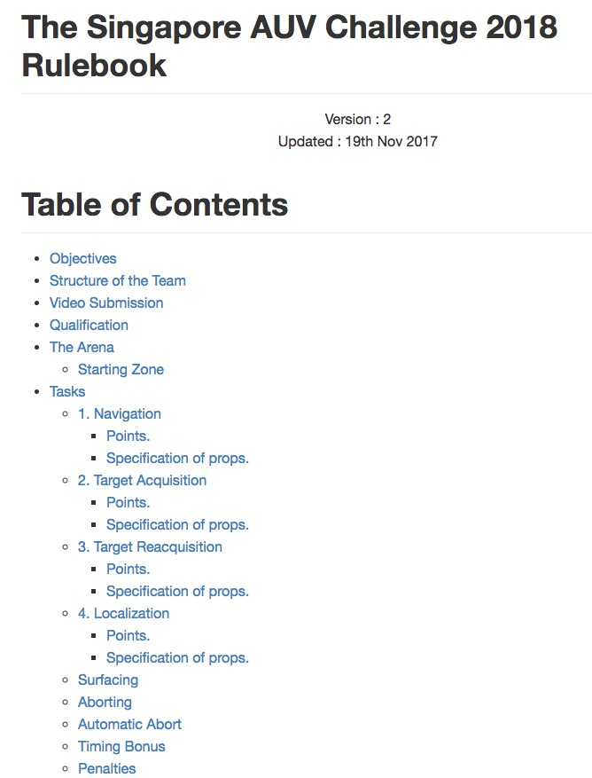

Game rules and regulations
#sauvc2018
Rulebook
- All game rules are written in the rulebook.
- Please read the rulebook.
- https://sauvc.org/rulebook/

Safety
- AUVs should not leak or pollute the pool.
- AUVs must have a brightly colored kill switch that turns off the vehicle.
### Game Sequence
1. Pre-qualification
2. Qualification Rounds
3. Practice Rounds
4. Final Rounds
### Pre-qualification
- Teams can test their AUVs in the Medium pool anytime after Day 1 (9 March 2018, Friday), 1300h
- A **maximum of 2 people per team** may enter the Medium pool.
- No over crowding of Medium pool.
Pre-qualification
- Spare props are available for testing in the Medium pool.
- 1 drum, 1 flare, 1 pinger (37.5kHz)
- Restricted to 2 corners of the Medium pool.
- 15 minute Prop Slots.
- Contact Slot Master to get Prop Slots.
### Pre-qualification
- On Day 1 (9 March 2018, Fri), any team can request for *Prop Slots*.
- From Day 2 (10 March 2018, Sat), only teams that have attempted qualification can request for *Prop Slots*.
### Qualification Rounds
- AUVs have to pass a qualifying round before they can participate in the main arena.
- To qualify an AUV has to swim **10 meters** and **without surfacing or touching the bottom/wall**.
- Only the top 15 qualified teams will advance to the Final round.
- *Qualification Slots* have been pre-allocated.
- https://sauvc.org/slots/
### Practice Rounds
- Teams that have advanced to Final round can request for *Practice Slots* in the main arena.
- **No tethers** at any time inside the main arena.
- Can calibrate of AUV sensors with tethers, at the edge of the pool, with the vehicle held **stationary**.
### Practice Rounds
- *Practice Slots* will be allocated first come first served.
- 15 minute *Practice Slots*.
- Contact *Slot Master* after qualification to request your *Practice Slots*.
### Final Rounds
- Finalists will be announced based on qualification results.
- Last team in qualification round will have the first *Final Round Slot*.
- 15 minute *Final Round Slot*.
- Bring AUV to pool side 5 minutes **before** your *Final Round Slot* starts.
### Final Round
- Any number of attempts within the 15 minute *Final Round Slot*.
- At the begining of every attempt AUV starts from the start zone with 0 points.
- Attempt with the highest score will be considered for final scoring.
Starting Zone
- Teams must start their AUVs from the starting zone.
- The team may only place the AUV at the surface.
- AUV must autonomously submerge before leaving the starting zone.
Tasks
- Navigation (Gate)
- Target Acquisition (Ball Drop)
- Target Reacquisition (Ball pickup)
- Localization (Flare)
Navigation
 ### Navigation
- The aim of the this task is to swim through a gate.
- There is a penalty for **touching the gate**.
### Navigation
- The aim of the this task is to swim through a gate.
- There is a penalty for **touching the gate**.
Target Acquisition
 ### Target Acquisition
- The aim of the task is drop a ball into one of the drum at the bottom of the pool.
- Drop the ball in the Blue drum. **[30 Points]**
- Drop the ball in the Red drum with the pinger (45kHz). **[50 Points]**
- Dropping the ball in any other Red drum. **[10 Points]**
- The location of the pinger **may be changed** in between attempts.
### Target Acquisition
- The aim of the task is drop a ball into one of the drum at the bottom of the pool.
- Drop the ball in the Blue drum. **[30 Points]**
- Drop the ball in the Red drum with the pinger (45kHz). **[50 Points]**
- Dropping the ball in any other Red drum. **[10 Points]**
- The location of the pinger **may be changed** in between attempts.
Target Reacquisition
 ### Target Reacquisition
- The aim of the task is pick a ball from the drum you dropped into.
- This task is only attemptable if the Target Acquisition has been successfully completed.
- AUV has to leave the target zone (green mat), before it can do the Target Reacquisition task.
- AUV has to hold on to the ball till the end of the attempt.
### Target Reacquisition
- The aim of the task is pick a ball from the drum you dropped into.
- This task is only attemptable if the Target Acquisition has been successfully completed.
- AUV has to leave the target zone (green mat), before it can do the Target Reacquisition task.
- AUV has to hold on to the ball till the end of the attempt.
Target Reacquisition

Localization
 ### Localization (Flare)
- Bump the flare causing the golf ball in the flare to drop out
- The flare is marked with an acoustic pinger (37.5kHz).
- This flare could be located **anywhere** within the main arena.
### Surfacing
- If the AUV surfaces any **any time** during the attempt, the current attempt comes to an **end**.
- **[5 Points]** bonus for ending (as opposed to aborting) an attempt.
### Timing Bonus Points
- At the end of an attempt, if the AUV has successfully completed at least 2 tasks.
- Not awarded if attempt was aborted (including automatic abort).
### Localization (Flare)
- Bump the flare causing the golf ball in the flare to drop out
- The flare is marked with an acoustic pinger (37.5kHz).
- This flare could be located **anywhere** within the main arena.
### Surfacing
- If the AUV surfaces any **any time** during the attempt, the current attempt comes to an **end**.
- **[5 Points]** bonus for ending (as opposed to aborting) an attempt.
### Timing Bonus Points
- At the end of an attempt, if the AUV has successfully completed at least 2 tasks.
- Not awarded if attempt was aborted (including automatic abort).
`Bonus points = (900 - RUN_TIME) • 0.03`
### Aborting
- Current attempt can be aborted, by indicating to the **Game Master**.
- Divers will turn off the AUV (kill switch) and bring it back to the starting zone.
### Automatic Abort
- AUV touches the bottom or walls for more than 10 seconds or 5 times **will automatically abort** the current attempt.
- Divers will turn off the AUV (kill switch) and bring it back to the starting zone.
### Penalties
| | Description | Penalty Points |
| -- | ----------- | -------------- |
| 1 | Touching the gate | 2 |
| 2 | AUV touches the bottom of the pool or wall | 5 |
### Diver Communication
- _Game Master_ will help you relay messages to the divers.
- Tell the _Game Master_ **clearly** if you want your AUV stopped and retreived by divers.
## No technical presentations
## Announcements
- https://sauvc.org/slots/
- https://sauvc.org/updates/
- Whatsapp Group
House Rules
- You have to return the Indemnity Form before you can enter ANY of the pools.
- No footware (shoes, slippers, etc) near the pool.
House Rules
- NO team member should EVER enter the main pool (There will be penality points!).
- Everyone near the pool MUST wear lifejackets.
### Photography Competition
- “Most Liked Photograph” competition.
- Take photos during the competition.
- Upload to **our (Singapore AUV Challenge)** Facebook page with hashtag `#sauvc2018`.
- The photo with most number of likes will win a prize.
- The deadline for uploading the photo is 1600h, Day 4 (12 March 2018, Monday).
### Medium Pool Testing
- **Any time** after Day 1 (9 March 2018, Friday), 1300h.
- You have to return the indemnity form to us **before** you can get into any pools.
- **No footware** inside the pool!